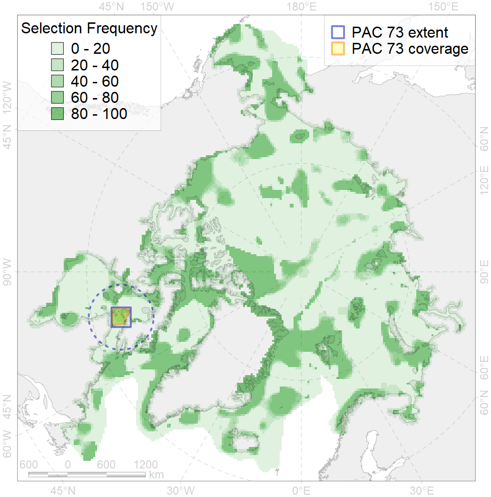

73
For more information regarding this PAC and to conduct custom spatial analysis using the PAC data or any spatial query, please consult Accenter.

0
CFs entirely within the PAC area
2
CFs at least 25% within the PAC area
3
CFs with at least 50% of their target achieved in the PAC
5
CFs with at least half of their target achieved in the PAC
| CF ID | CF Name | Proportion in the PAC | Conservation Target | Contribution to ArcNet Target Achievement | PAC’s Contribution to the Achieved Target |
|---|---|---|---|---|---|
| 3022 | Marginal Ice Zone distribution in April in the Hudson Bay LME | 33.3% | 12.0% | 259.6% | 61.7% |
| 3131 | Polynyas distribution in the Hudson Strait region | 25.5% | 12.0% | 196.5% | 74.2% |
| 7170 | IV.2.3. Hudson Bay slope | 16.9% | 12.2% | 125.0% | 52.6% |
| 9025 | polar bear denning areas of FB (Foxe Basin) subpopulation | 15.1% | 64.8% | 21.3% | 21.2% |
| 1011 | Atlantic Walrus haulouts in Nunavut and West Greenland | 12.6% | 96.0% | 13.0% | 13.0% |
| 5030 | Beluga of the Ungava Bay winter distribution | 11.5% | 12.0% | 85.1% | 21.2% |
| 5033 | Beluga of the Western Hudson Bay winter distribution | 11.5% | 48.0% | 21.3% | 21.2% |
| 1003 | Atlantic Walrus Wintering Areas in Canada | 9.1% | 67.2% | 12.8% | 11.1% |
| 4035 | Feeding area of the Lake trout (Salvelinus namaycush) | 7.3% | 14.4% | 47.2% | 19.1% |
| 5104 | Bowhead whale Baffin population winter distribution | 6.2% | 24.0% | 23.1% | 11.5% |
| 5042 | Bowhead whale winter concentrations in the Baffin Bay | 5.4% | 48.0% | 10.0% | 6.8% |
| 7144 | III.2.1.3. Hudson Trough | 5.3% | 10.8% | 41.3% | 12.9% |
| 9007 | polar bear of the FB (Foxe Basin) subpopulation distribution | 5.0% | 32.4% | 14.9% | 12.0% |
| 2022 | Harp seal foraging areas in the Hudson Bay | 4.8% | 24.0% | 18.0% | 17.9% |
| 7142 | III.2.1.1. Baffinian shelf | 4.1% | 6.8% | 56.5% | 7.8% |
| 1002 | Atlantic Walrus Summer Distribution in Canada | 4.1% | 33.6% | 11.0% | 7.5% |
| 7045 | Fox Basin trnasitional zone | 3.8% | 16.0% | 22.4% | 10.7% |
| 5039 | Bowhead whale autumn concentrations in the Baffin Bay | 3.6% | 48.0% | 7.3% | 7.2% |
| 4075 | Fish zoogeography, Arctic Region, High-Arctic Shelf Province, Hudson District | 3.2% | 9.0% | 31.6% | 11.3% |
| 2048 | Ringed seal whelping areas in the Hudson Bay area | 3.1% | 24.0% | 11.8% | 11.0% |
| 4007 | Feeding/nursery area of the Cisco (Coregonus artedi) | 3.1% | 32.4% | 7.7% | 5.4% |
| 7139 | III.1.1.6. Foxe Basin middle shelf | 2.8% | 11.6% | 24.2% | 9.3% |
| 5103 | Bowhead whale Baffin population spring-autumn distribution | 2.8% | 24.0% | 9.8% | 5.4% |
| 3035 | Marginal Ice Zone distribution in July in the Hudson Bay LME | 2.3% | 24.0% | 9.6% | 6.7% |
| 7138 | III.1.1.5. Foxe Basin shallow shelf | 2.3% | 9.2% | 25.0% | 8.5% |
| 2010 | Bearded seal whelping areas in the Hudson Bay | 1.7% | 24.0% | 6.2% | 6.2% |
| 7169 | IV.2.2. central Hudson Bay | 1.4% | 3.9% | 30.4% | 9.0% |